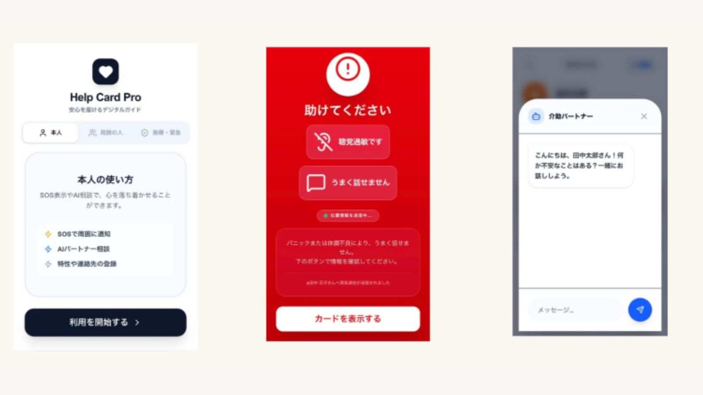

Emergency / NFC / QR
Aid
緊急時サポートツール
緊急時サポートツール
使い方ガイド
災害・事故・パニックなどで、本人が長い説明をできない状況でも
「必要情報を一瞬で伝え」「周囲が次の行動を迷わない」ようにするためのツールです。

1 想定される導線（最重要）
NFCタグにかざす / QRを読み取る
“緊急画面”が即表示
※ログイン不要で、最初の10秒で情報を伝達します。
イメージ
スマホをかざすだけ
2 画面構成と機能
A 緊急トップ画面
最初の10秒を勝ちに行くための最重要画面です。
- 助けを呼ぶボタン（110/119）
- 近くの人に見せる（表示最大化）
- 登録連絡先への緊急通知
B “見せる情報”カード
周囲の人が上から読むだけで、適切な対応が可能になります。
- 苦手・NGな対応（例：大声）
- 有効な対応（例：筆談）
- 医療情報・アレルギー
C 現在地共有
位置情報を許可できる場合は地図リンクを生成。
難しい場合は「私はここにいます」画面を表示し、周囲の人に現在地を入力してもらうことも可能です。
D 行動ガイド
周囲が迷わないためのステップを表示します。
1. まず安全な場所へ誘導
2. 本人のスマホで家族へ連絡
3. 救急車を呼ぶ判断
2. 本人のスマホで家族へ連絡
3. 救急車を呼ぶ判断
3 事前準備・運用のコツ
情報は「二層」で管理
誰でも見られる「公開情報（配慮事項など）」と、PINコード等が必要な「限定情報（詳細な病歴・住所など）」を分けるのが現実的かつ安全です。
“見せるだけで成立する”設計
通知機能や位置情報は電波状況や端末設定に依存します。最悪の場合でも画面を見せるだけで支援を受けられるよう、テキスト情報を充実させましょう。
アプリを利用・登録する
※ 平常時にご家族・支援者の方と一緒に登録することをお勧めします